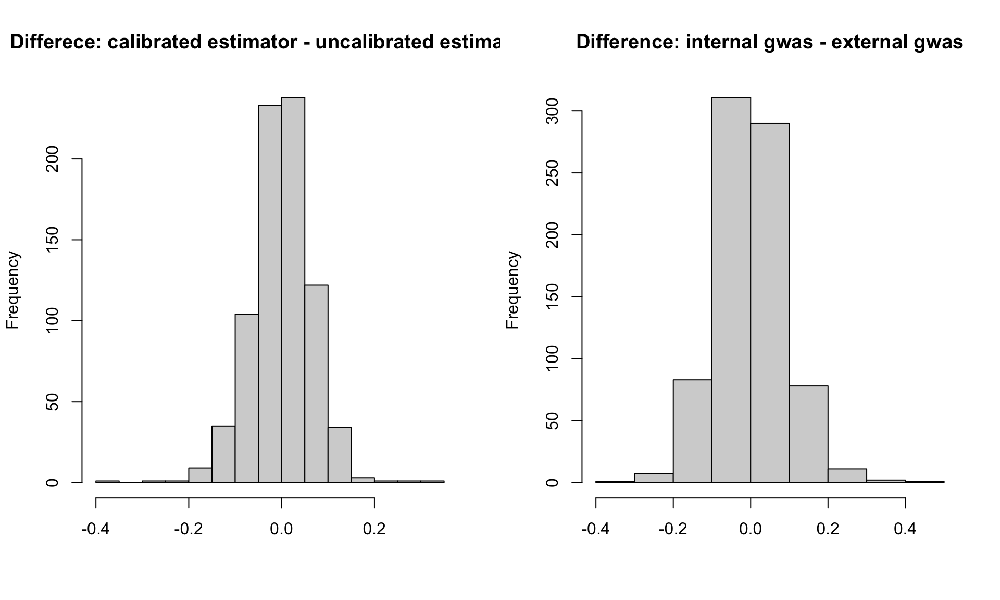
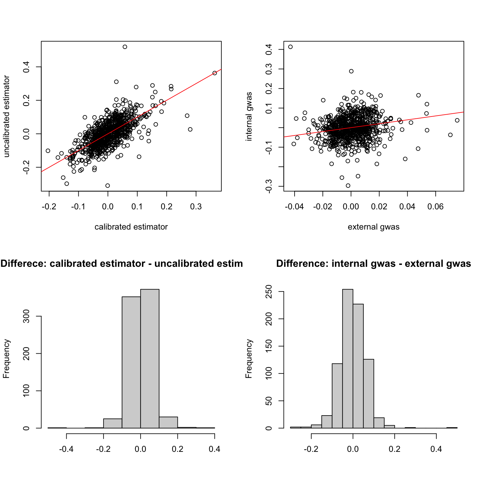
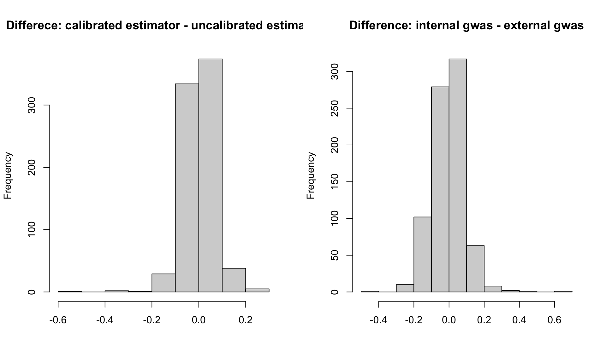
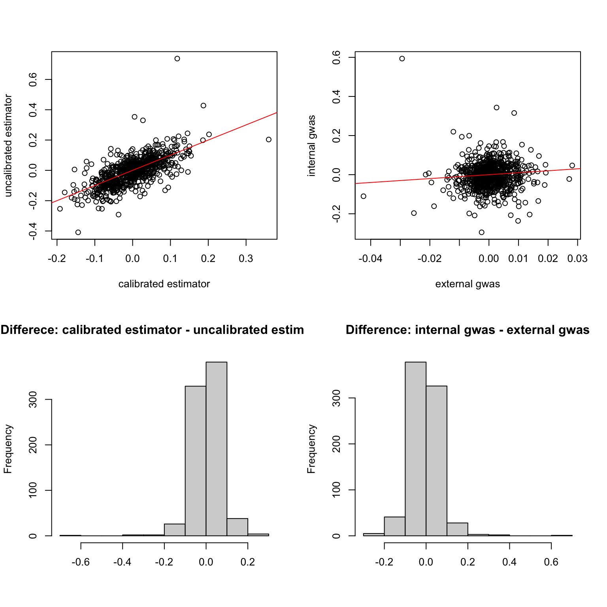

Calibration on ukb trio data
Yunqi Yang
5/8/2024
Last updated: 2024-05-09
Checks: 7 0
Knit directory: simulation-calibrated-mr/
This reproducible R Markdown analysis was created with workflowr (version 1.6.2). The Checks tab describes the reproducibility checks that were applied when the results were created. The Past versions tab lists the development history.
Great! Since the R Markdown file has been committed to the Git repository, you know the exact version of the code that produced these results.
Great job! The global environment was empty. Objects defined in the global environment can affect the analysis in your R Markdown file in unknown ways. For reproduciblity it’s best to always run the code in an empty environment.
The command set.seed(20230217) was run prior to running the code in the R Markdown file. Setting a seed ensures that any results that rely on randomness, e.g. subsampling or permutations, are reproducible.
Great job! Recording the operating system, R version, and package versions is critical for reproducibility.
Nice! There were no cached chunks for this analysis, so you can be confident that you successfully produced the results during this run.
Great job! Using relative paths to the files within your workflowr project makes it easier to run your code on other machines.
Great! You are using Git for version control. Tracking code development and connecting the code version to the results is critical for reproducibility.
The results in this page were generated with repository version 733a035. See the Past versions tab to see a history of the changes made to the R Markdown and HTML files.
Note that you need to be careful to ensure that all relevant files for the analysis have been committed to Git prior to generating the results (you can use wflow_publish or wflow_git_commit). workflowr only checks the R Markdown file, but you know if there are other scripts or data files that it depends on. Below is the status of the Git repository when the results were generated:
Ignored files:
Ignored: .DS_Store
Ignored: .Rhistory
Ignored: .Rproj.user/
Ignored: analysis/.DS_Store
Ignored: data/.DS_Store
Untracked files:
Untracked: analysis/ukb_trait_calibration_sib.Rmd
Unstaged changes:
Deleted: analysis/bmi_t2d.Rmd
Deleted: analysis/ukb_trait_calibration.Rmd
Note that any generated files, e.g. HTML, png, CSS, etc., are not included in this status report because it is ok for generated content to have uncommitted changes.
These are the previous versions of the repository in which changes were made to the R Markdown (analysis/ukb_trait_calibration_trio.Rmd) and HTML (docs/ukb_trait_calibration_trio.html) files. If you’ve configured a remote Git repository (see ?wflow_git_remote), click on the hyperlinks in the table below to view the files as they were in that past version.
| File | Version | Author | Date | Message |
|---|---|---|---|---|
| Rmd | 733a035 | yunqiyang0215 | 2024-05-09 | wflow_publish("analysis/ukb_trait_calibration_trio.Rmd") |
1. BMI
sumstat = readRDS("/Users/nicholeyang/Downloads/calibrated_estimator/real-data-analysis/result/trio_calibration_bmi.rds")
ext = read.csv("/Users/nicholeyang/Downloads/calibrated_estimator/real-data-analysis/combined_bmi.linear", sep = "\t")sumstat = data.frame(sumstat)
sumstat$ID = rownames(sumstat)
dat = merge(sumstat, ext, by.x = "ID", by.y = "ID", all = FALSE)
head(dat) ID cali cali.var raw raw.var int
1 rs10004698 -0.0151337904 0.001681406 -0.05218778 0.004394767 -0.05218778
2 rs10009336 0.2030265661 0.002572814 0.19414371 0.005619499 0.19414371
3 rs1000940 -0.0621282363 0.001642207 -0.06196002 0.003946237 -0.06196002
4 rs1003081 -0.0236439902 0.001890722 0.06847810 0.003934939 0.06847810
5 rs10036136 0.0214230239 0.001836773 0.04861030 0.003730940 0.04861030
6 rs10050688 0.0003728553 0.002099614 -0.03202102 0.004670161 -0.03202102
int.var X.CHROM POS REF ALT A1 TEST OBS_CT BETA SE
1 0.004398049 4 188961336 A G G ADD 257429 0.00197690 0.00302184
2 0.007166299 4 44480783 T C C ADD 257429 0.01168170 0.00377308
3 0.004092325 17 5283252 G A A ADD 257429 -0.01851870 0.00302595
4 0.003835607 11 118913993 T C C ADD 257429 -0.01212200 0.00279283
5 0.003964067 5 32869686 A G G ADD 257429 -0.00457835 0.00282191
6 0.004342678 5 116657963 A G G ADD 257429 0.00613477 0.00297863
T_STAT P
1 0.654206 5.12980e-01
2 3.096060 1.96131e-03
3 -6.119940 9.37432e-10
4 -4.340420 1.42268e-05
5 -1.622430 1.04712e-01
6 2.059590 3.94385e-02# check estimate scale
par(mfrow = c(1,3))
plot(dat$BETA, dat$cali, xlab = "external gwas", ylab = "calibrated estimator")
abline(a = 0, b = 1, col = "red")
plot(dat$cali, dat$raw, xlab = "calibrated estimator", ylab = "uncalibrated estimator")
abline(a = 0, b = 1, col = "red")
plot(dat$BETA, dat$int, xlab = "external gwas", ylab = "internal gwas")
abline(a = 0, b = -1, col = "red")
par(mfrow = c(1,2))
hist(dat$cali - dat$raw, main = "Differece: calibrated estimator - uncalibrated estimator", xlab = "")
hist(dat$int - dat$BETA, main = "Difference: internal gwas - external gwas", xlab = "")
res1 <- t.test(dat$cali, dat$raw)
res2<- t.test(dat$int, dat$BETA)
res1
Welch Two Sample t-test
data: dat$cali and dat$raw
t = 0.077765, df = 1414.4, p-value = 0.938
alternative hypothesis: true difference in means is not equal to 0
95 percent confidence interval:
-0.006986317 0.007563095
sample estimates:
mean of x mean of y
0.0009851306 0.0006967412 res2
Welch Two Sample t-test
data: dat$int and dat$BETA
t = 0.46328, df = 819.4, p-value = 0.6433
alternative hypothesis: true difference in means is not equal to 0
95 percent confidence interval:
-0.004582697 0.007414230
sample estimates:
mean of x mean of y
0.0007047380 -0.0007110287 pval.ext = pnorm(abs(dat$BETA/dat$SE), lower.tail = FALSE)
pval.cali = pnorm(abs(dat$cali/sqrt(dat$cali.var)), lower.tail = FALSE)
pval.uncali = pnorm(abs(dat$raw/sqrt(dat$raw.var)), lower.tail = FALSE)
sum(pval.ext < 1e-8)[1] 78sum(pval.cali < 1e-3)[1] 6sum(pval.uncali < 1e-3)[1] 2Calibration result
par(mfrow = c(1, 2))
sumstat = data.frame(sumstat)
boxplot(dat[, c("cali.var", "raw.var")], ylab = "variance")
hist((dat$raw.var - dat$cali.var)/dat$raw.var, main = "variance reduction", xlab = "")
2. DBP
sumstat = readRDS("/Users/nicholeyang/Downloads/calibrated_estimator/real-data-analysis/result/trio_calibration_dbp.rds")
ext = read.csv("/Users/nicholeyang/Downloads/calibrated_estimator/real-data-analysis/combined_bmi.linear", sep = "\t")sumstat = data.frame(sumstat)
sumstat$ID = rownames(sumstat)
dat = merge(sumstat, ext, by.x = "ID", by.y = "ID", all = FALSE)
head(dat) ID cali cali.var raw raw.var int
1 rs10004698 0.0229710551 0.001861947 0.045065276 0.004854948 0.045065276
2 rs10009336 0.0539054207 0.003376672 0.099499025 0.007399003 0.099499025
3 rs1000940 -0.0017808311 0.001479061 -0.037989997 0.004388344 -0.037989997
4 rs1003081 -0.0013340742 0.001767758 0.019687178 0.004093925 0.019687178
5 rs10036136 -0.0604286168 0.001905079 -0.007335407 0.003908259 -0.007335407
6 rs10050688 0.0007609039 0.002375252 0.007284161 0.005243662 0.007284161
int.var X.CHROM POS REF ALT A1 TEST OBS_CT BETA SE
1 0.004755702 4 188961336 A G G ADD 257429 0.00197690 0.00302184
2 0.008064450 4 44480783 T C C ADD 257429 0.01168170 0.00377308
3 0.004364237 17 5283252 G A A ADD 257429 -0.01851870 0.00302595
4 0.004061763 11 118913993 T C C ADD 257429 -0.01212200 0.00279283
5 0.004323469 5 32869686 A G G ADD 257429 -0.00457835 0.00282191
6 0.004853808 5 116657963 A G G ADD 257429 0.00613477 0.00297863
T_STAT P
1 0.654206 5.12980e-01
2 3.096060 1.96131e-03
3 -6.119940 9.37432e-10
4 -4.340420 1.42268e-05
5 -1.622430 1.04712e-01
6 2.059590 3.94385e-02# check estimate scale
par(mfrow = c(1,3))
plot(dat$BETA, dat$cali, xlab = "external gwas", ylab = "calibrated estimator")
abline(a = 0, b = 1, col = "red")
plot(dat$cali, dat$raw, xlab = "calibrated estimator", ylab = "uncalibrated estimator")
abline(a = 0, b = 1, col = "red")
plot(dat$BETA, dat$int, xlab = "external gwas", ylab = "internal gwas")
abline(a = 0, b = 1, col = "red")
par(mfrow = c(1,2))
hist(dat$cali - dat$raw, main = "Differece: calibrated estimator - uncalibrated estimator", xlab = "")
hist(dat$int - dat$BETA, main = "Difference: internal gwas - external gwas", xlab = "")
res1 <- t.test(dat$cali, dat$raw)
res2<- t.test(dat$int, dat$BETA)
res1
Welch Two Sample t-test
data: dat$cali and dat$raw
t = 1.0156, df = 1361.1, p-value = 0.31
alternative hypothesis: true difference in means is not equal to 0
95 percent confidence interval:
-0.003732262 0.011744860
sample estimates:
mean of x mean of y
-0.001049822 -0.005056121 res2
Welch Two Sample t-test
data: dat$int and dat$BETA
t = -1.3028, df = 813.75, p-value = 0.193
alternative hypothesis: true difference in means is not equal to 0
95 percent confidence interval:
-0.010838063 0.002190848
sample estimates:
mean of x mean of y
-0.0050346357 -0.0007110287 pval.ext = pnorm(abs(dat$BETA/dat$SE), lower.tail = FALSE)
pval.cali = pnorm(abs(dat$cali/sqrt(dat$cali.var)), lower.tail = FALSE)
pval.uncali = pnorm(abs(dat$raw/sqrt(dat$raw.var)), lower.tail = FALSE)
sum(pval.ext < 1e-8)[1] 78sum(pval.cali < 1e-3)[1] 3sum(pval.uncali < 1e-3)[1] 5Calibration result
par(mfrow = c(1, 2))
sumstat = data.frame(sumstat)
boxplot(dat[, c("cali.var", "raw.var")], ylab = "variance")
vr = (dat$raw.var - dat$cali.var)/dat$raw.var
hist(vr, main = "variance reduction", xlab = "")
vr[order(vr, decreasing = TRUE)][1:5][1] 0.9933775 0.7258196 0.6904291 0.6837973 0.6738215dat[486, ] ID cali cali.var raw raw.var int
486 rs4311 0.005576307 1.652403e-05 0.04308604 0.002495142 0.05993063
int.var X.CHROM POS REF ALT A1 TEST OBS_CT BETA SE
486 0.004457873 17 61560763 C T T ADD 257429 0.00519877 0.00279203
T_STAT P
486 1.86201 0.0626031
sessionInfo()R version 4.1.1 (2021-08-10)
Platform: x86_64-apple-darwin20.6.0 (64-bit)
Running under: macOS Monterey 12.0.1
Matrix products: default
BLAS: /usr/local/Cellar/openblas/0.3.18/lib/libopenblasp-r0.3.18.dylib
LAPACK: /usr/local/Cellar/r/4.1.1_1/lib/R/lib/libRlapack.dylib
locale:
[1] en_US.UTF-8/en_US.UTF-8/en_US.UTF-8/C/en_US.UTF-8/en_US.UTF-8
attached base packages:
[1] stats graphics grDevices utils datasets methods base
other attached packages:
[1] workflowr_1.6.2
loaded via a namespace (and not attached):
[1] Rcpp_1.0.8.3 rstudioapi_0.13 whisker_0.4 knitr_1.36
[5] magrittr_2.0.1 R6_2.5.1 rlang_1.1.1 fastmap_1.1.0
[9] fansi_0.5.0 highr_0.9 stringr_1.4.0 tools_4.1.1
[13] xfun_0.27 utf8_1.2.2 cli_3.6.1 git2r_0.28.0
[17] jquerylib_0.1.4 htmltools_0.5.5 ellipsis_0.3.2 rprojroot_2.0.2
[21] yaml_2.2.1 digest_0.6.28 tibble_3.1.5 lifecycle_1.0.3
[25] later_1.3.0 sass_0.4.4 vctrs_0.6.3 promises_1.2.0.1
[29] fs_1.5.0 cachem_1.0.6 glue_1.4.2 evaluate_0.14
[33] rmarkdown_2.11 stringi_1.7.5 bslib_0.4.1 compiler_4.1.1
[37] pillar_1.9.0 jsonlite_1.7.2 httpuv_1.6.3 pkgconfig_2.0.3